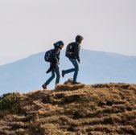
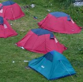

L'actualité du camp pour rester informé

La vie au camp semaine du 29 juin
Comme chaque semaine, retrouvez le compte-rendu de nos activités. Cette semaine retour sur la sortie rafting, la chute de cheval de Vincent et la rénovation de notre four solaire par Quentin.

Les photos de la sortie rafting
Excellente sortie rafting cette semaine! Le beau temps était de la partie et l'eau de la rivière très rafraichissante. L'occasion rêvée pour faire quelques photos.

Portrait Morgan le râleur
Cette semaine nous allons vous parler d'un garçon qui râle tellement qu'il continue même en dormant. Découvrez tout de suite ce râleur attachant qu'est Morgan.
- 
La vie au camp semaine du 22 juin
Comme chaque semaine, retrouvez le compte-rendu de nos activités. Cette semaine retour sur la sortie rafting, la chute de cheval de Vincent et la rénovation de notre four solaire par Quentin.
- 
Les photos du bivouac en montagne
Partis en petit comité de 5 courageux, nous avons mis plus de 7 heures avant d'atteindre notre lieu de bivouac. Couché de soleil sur les cimes, et marmottes au petit matin...
Tutorial fabriquer un attrape rêve
Un petit tutoriel qui ne vous demandera pas beaucoup de fournitures, observez autour de vous, vous trouverez toutes les ressources nécessaires pour construire un attrape-rêve.
La vie au camp semaine du 15 juin
Comme chaque semaine, retrouvez le compte-rendu de nos activités. Cette semaine retour sur la sortie rafting, la chute de cheval de Vincent et la rénovation de notre four solaire par Quentin.

Le co-voiturage pour venir au camp
Le transport à un coût, surtout si vous devez traverser le pays pour nous rejoindre. Avez-vous pensez au co-voiturage ? On vous explique comment faire et on vous donne nos bons plans.
La vie au camp semaine du 8 juin
Comme chaque semaine, retrouvez le compte-rendu de nos activités. Cette semaine retour sur la sortie rafting, la chute de cheval de Vincent et la rénovation de notre four solaire par Quentin.
Portrait de Mélanie blagueuse carambar
Cette semaine, découvrons Mélanie qui nous vient de Bretagne et apprécions son humour ravageur qui semble plaire au plus grand nombre sur le camp.